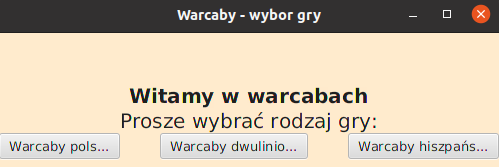

Warcaby to gra, którą zna każdy. Ale czy każdy zastanawia się jak to wygląda w środku? Jak napisany jest kod, dzięki któremu w internecie możemy grać między sobą lub botem?

Na 3 semestrze takie zadanie mnie czekało. Razem z koleżanką musiałyśmy taką grę napisać wraz z szatą graficzną. Nie był to łatwy projekt, ale po kilku tygodniach nam się udało.